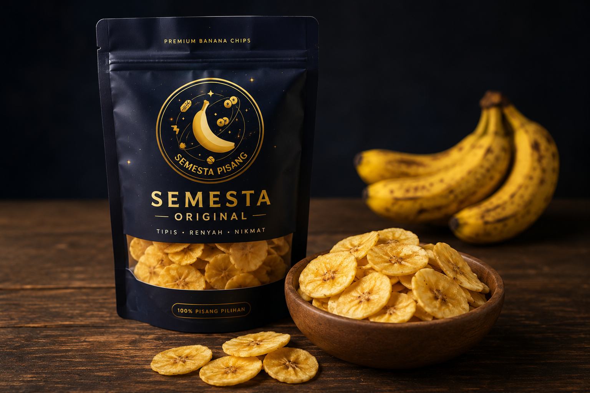
Best SellerOriginal
Rasa klasik gurih asli pisang tanpa tambahan bumbu, renyah dan cocok untuk semua kalangan.
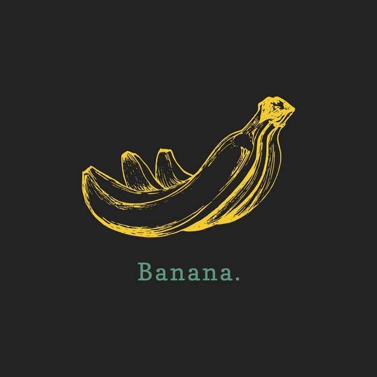
Premium Banana Chips
Dibuat dari pisang pilihan terbaik, digoreng dengan teknik khusus hingga renyah sempurna, tanpa bahan pengawet. Setiap gigitan menghadirkan cita rasa nusantara yang otentik.
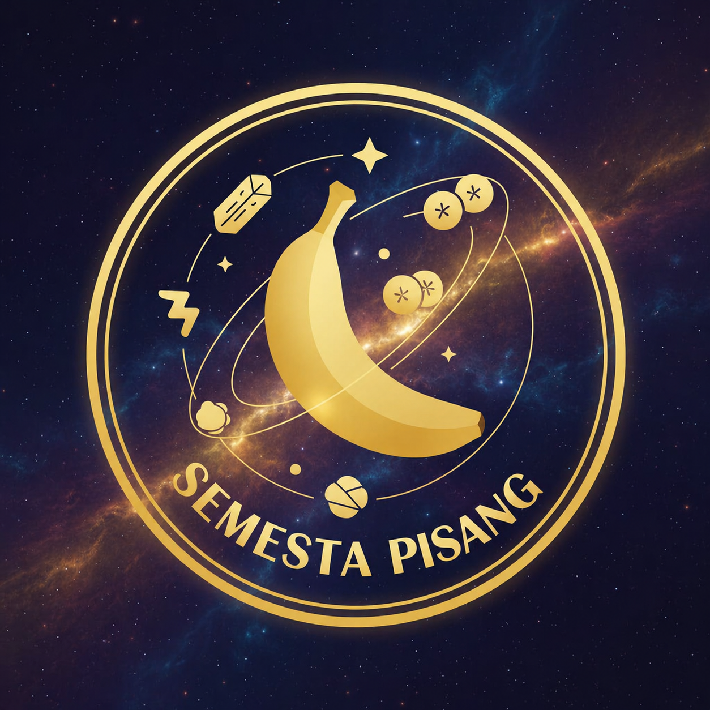
Tentang Kami
Semesta Pisang lahir dari kecintaan terhadap kekayaan rasa pisang lokal. Setiap keripik diproses secara higienis mulai dari pemilihan pisang, pengirisan tipis merata, hingga penggorengan dengan minyak berkualitas agar tekstur renyah dapat bertahan lama. Kami berkomitmen menghadirkan camilan sehat, gurih, dan bebas pengawet untuk menemani momen bersantai Anda kapan saja.
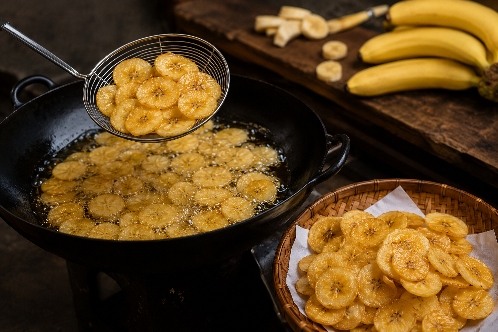
Menu Andalan
Beragam varian rasa keripik pisang premium untuk semua selera.

Best SellerRasa klasik gurih asli pisang tanpa tambahan bumbu, renyah dan cocok untuk semua kalangan.
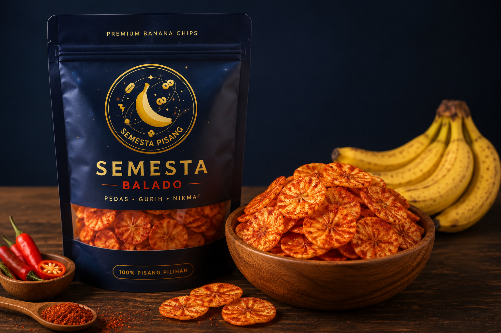
PedasBalutan bumbu balado pedas manis yang menempel sempurna di setiap keping keripik.
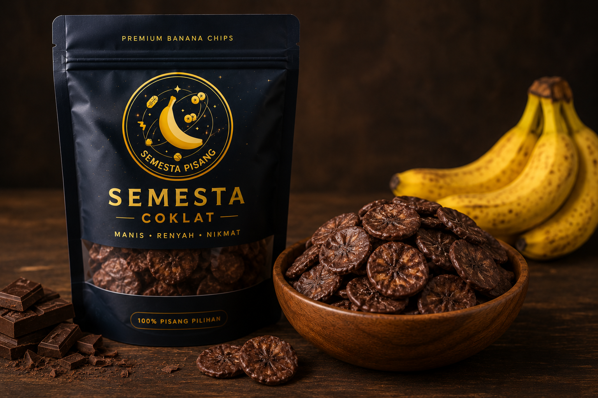
FavoritLapisan coklat premium yang meleleh manis, perpaduan renyah dan manis dalam satu gigitan.
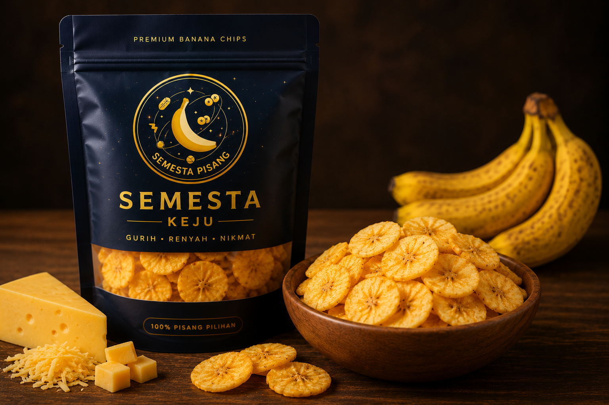
Taburan keju gurih di atas keripik renyah, menghadirkan sensasi rasa creamy yang khas.
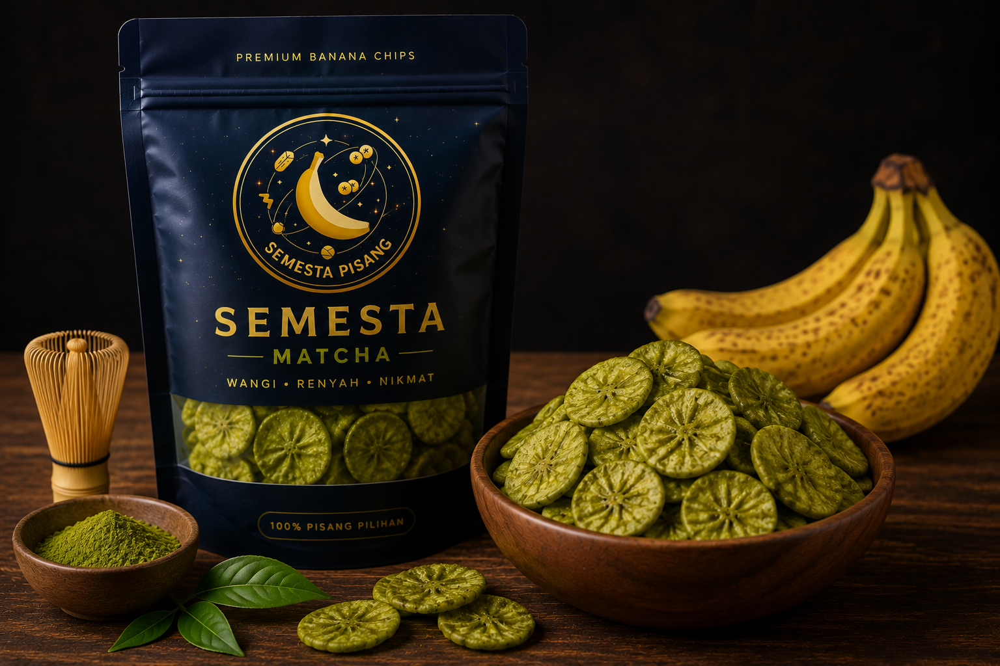
BaruSentuhan matcha premium yang sedikit pahit-manis, cocok untuk pecinta rasa unik dan segar.
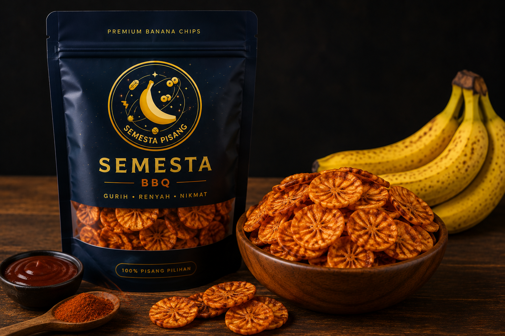
Aroma smoky bumbu BBQ yang khas berpadu dengan gurihnya keripik pisang renyah.
Kenapa Pilih Kami
Menggunakan pisang berkualitas terbaik yang dipilih secara selektif dari petani lokal.
Diolah secara alami tanpa bahan pengawet, aman dan sehat untuk dikonsumsi sehari-hari.
Teknik penggorengan khusus menghasilkan tekstur keripik yang renyah tahan lama.
Diproduksi setiap hari dalam jumlah terbatas untuk menjaga kesegaran dan kualitas rasa.
Galeri
Momen produksi dan kelezatan Semesta Pisang dalam setiap gambar.

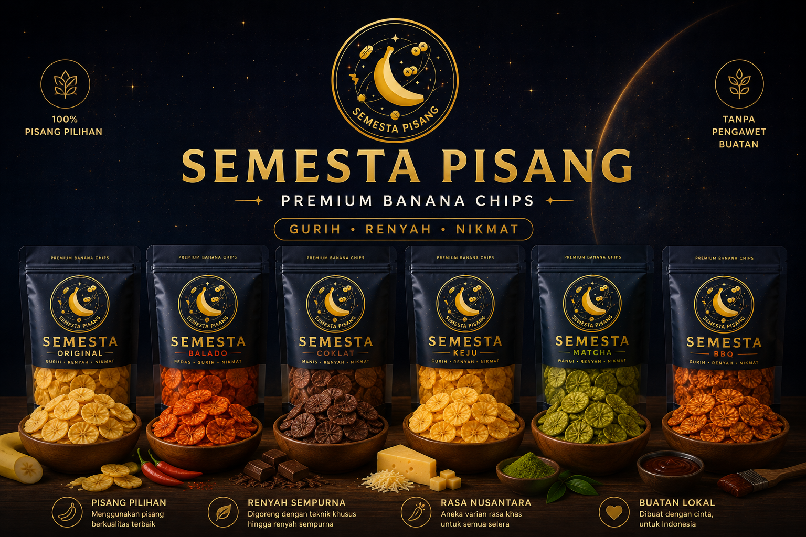
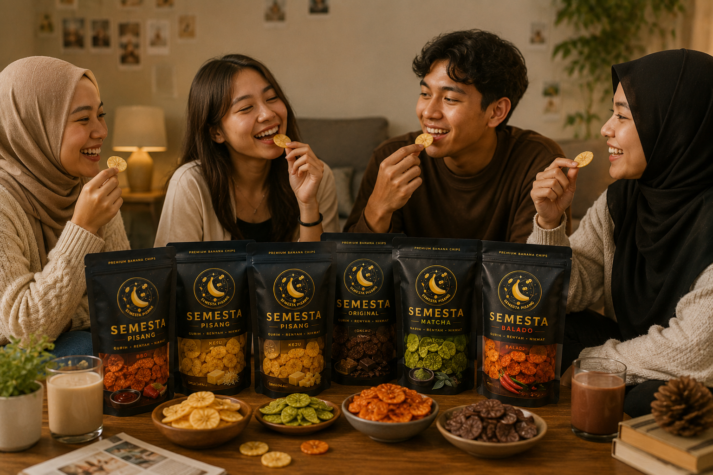
Ulasan Pelanggan
Kepuasan pelanggan adalah prioritas utama kami.
"Keripiknya renyah banget dan rasanya nggak eneg. Varian coklatnya jadi favorit di rumah."
"Pengemasannya rapi dan pengiriman cepat. Rasa baladonya pedas manis pas banget di lidah."
"Cocok jadi oleh-oleh, tahan lama dan renyahnya awet meski disimpan beberapa minggu."